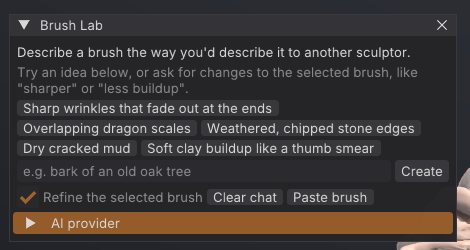
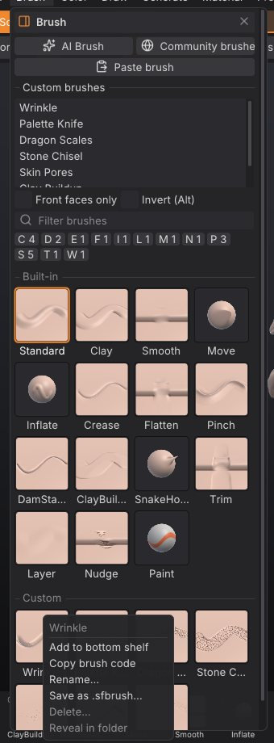
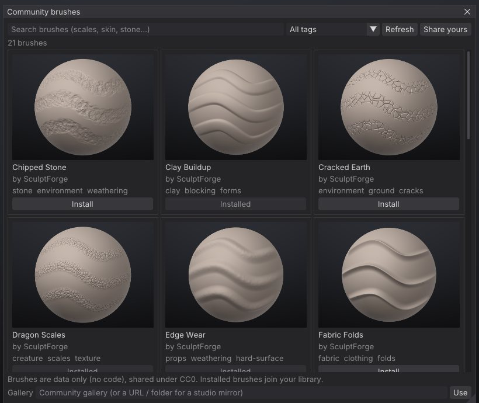

Brush Lab and sharing brushes
Brush Lab designs sculpting brushes from a description: type "dry cracked mud" and an AI model builds the brush, then you refine it in words or with sliders. This chapter covers Brush Lab, the AI providers it can use, the recipe settings, your brush library, and the ways to share brushes: .sfbrush files, one-line brush codes, studio folders and the community gallery.


What a custom brush is#
A custom brush is a recipe: about twenty named values that describe how the brush moves the surface, the shape of its tip, a surface pattern, stroke spacing and masking. A recipe is data, never code, so brushes are safe to download and share. The AI only fills in these values; you can see and change every one of them.
Custom brushes work everywhere built-in brushes do: on the bottom shelf, in the brush picker (B), with Alt, Shift, masks, symmetry, strokes and alphas.
Open Brush Lab#
Click AI Brush on the top shelf, or AI Brush at the top of the Brush palette. Brush Lab is a floating window; it opens at the top-left corner of the canvas the first time, and you can drag it anywhere. Click the button again, or the window's close box, to hide it.
Design a brush#
- Open Brush Lab.
-
Type a description in the field at the bottom, the way you'd describe the brush to another sculptor, for example
bark of an old oak treeorsoft folds in heavy cloth. Or click one of the starter ideas, such as Overlapping dragon scales or Dry cracked mud. - Press Enter or click Create. While the model works, the conversation shows "Designing brush".
- When the brush is ready, it becomes the active brush and the status bar says so. Try it on the model.
The model replies with the brush name in brackets and a sentence on what the brush does and what to try next. Errors (no connection, rate limits, a model that didn't return a recipe) appear in red in the same conversation.
Refine a brush in words#
With Refine the selected brush ticked, your next message changes the active custom brush instead of creating a new one: "sharper", "less buildup", "make the scales smaller". The model sees the current recipe and your conversation so far. Clear chat starts a new conversation.
Tune a brush with sliders#
Open the Recipe section of Brush Lab to see every value of the active custom brush. The same editor appears in the Brush palette as Edit recipe: NAME when a custom brush is active. Hover a slider for a description.
| Setting | Range | What it does |
|---|---|---|
| Direction | normal, inflate, view, stroke | Which way the surface moves: out of the surface, outward in every direction, toward the camera, or along the stroke. |
| Depth | -1 to 1 | Adds material (positive) or carves it away (negative). |
| Plane | none, clay, flatten, fill, scrape | Planar behaviour: flat-topped clay layers, levelling, raising only low spots, or cutting only high spots. |
| Plane amount | 0 to 1 | Strength of the plane behaviour. |
| Pinch | -1 to 1 | Pulls the surface toward the stroke for crisp creases (negative spreads it apart). |
| Drag | 0 to 1 | Smears the surface along the stroke, like a palette knife. |
| Auto smooth | 0 to 1 | Relaxes the surface after each dab for softer, cleaner results. |
| Hardness | 0 to 1 | Soft airbrush edge (0) to hard-edged stamp (1). |
| Tip sharpness | 0 to 1 | Round, broad tip (0) to a narrow needle point (1). |
| Pattern | none, noise, scales, ridges, pores, cracks | A surface texture stamped by the brush. |
| Pattern size | 0.03 to 2 | Size of the pattern relative to the brush size. |
| Pattern amount | 0 to 1 | How strongly the pattern shows. |
| Spacing | 0.02 to 2 | Distance between dabs, relative to the brush size. |
| Jitter | 0 to 1 | Random scatter of dabs around the stroke. |
| Pressure curve | 0.3 to 3 | Tablet response: above 1 needs a firmer press, below 1 responds to a light touch. |
| Front faces only | on / off | Only affects surfaces facing the camera, protecting thin parts. |
| Cavity mask | -1 to 1 | Positive: only cavities. Negative: only ridges and peaks (as Edge Wear does). |
The name field at the top of the editor renames the brush when you press Enter.
Choose an AI provider#
Brush Lab works out of the box with no account or key. Open the AI provider section of Brush Lab (also in Generate > AI brush provider) to choose another service.
| Provider | What you need | Notes |
|---|---|---|
| Free - no account or key (default) | Nothing | An open model (GPT-OSS 20B) hosted by Pollinations.ai. Only your description and settings are sent. Rate limited to about one request every few seconds. If it can't be reached, a running local Ollama is used instead. |
| Anthropic (Claude) - your key | An Anthropic API key | Uses claude-opus-5-5 by default. Effort (low, medium, high) trades speed for more considered brushes. |
| OpenAI-compatible (OpenAI, Ollama, LM Studio...) | An endpoint, a model name and, for hosted services, a key | Any server that speaks the OpenAI chat completions API, including local models. |
For Anthropic and OpenAI-compatible providers you can edit the Endpoint, Model and API key fields. Leave the key empty to use the ANTHROPIC_API_KEY or OPENAI_API_KEY environment variable. Click Save settings to keep your choice; settings and keys are stored only on your computer, in ai.json in the SculptForge settings folder (readable only by you). Requests go only to the endpoint you set.
Run a model on your own computer#
For private, offline use with no rate limits, run a local model with Ollama or LM Studio:
-
Install Ollama and download the recommended model:
ollama pull qwen3:4b-instruct(2.5 GB, works without a graphics card). - In AI provider, choose OpenAI-compatible (OpenAI, Ollama, LM Studio...).
- Click Ollama (or LM Studio) to fill in the local endpoint.
- Click Find models. SculptForge checks the connection, shows "Connected" with the number of installed models, and lets you pick one from the Model list.
- Click Save settings.
The Run a model on this computer section in the panel shows the install steps for your operating system. The model needs about 4 GB of free memory; expect 10-20 seconds per brush on a laptop CPU and a few seconds with a GPU. The full walkthrough for Windows, macOS, Linux and LM Studio is in docs/local-ai.md.
Your brush library#
Every brush you create or refine in Brush Lab is saved to your brush library automatically, a moment after your last change (slider edits save when you release the slider). The library loads at every start, in the app, in sculptforge-cli and in the Python module, so your brushes are always there.
The library is a folder of .sfbrush files in the SculptForge settings folder:
| System | Brush library |
|---|---|
| Linux | ~/.local/share/SculptForge/SculptForge/brushes |
| macOS | ~/Library/Application Support/SculptForge/SculptForge/brushes |
| Windows | %APPDATA%\SculptForge\SculptForge\brushes |


The Custom brushes list#
The Brush palette lists every custom brush under Custom brushes. A small tag after a name says where the brush comes from when it isn't simply yours or built in:
| Tag | Meaning |
|---|---|
| (none) | A built-in brush, or a brush in your library |
yours | Your version, which replaces a built-in or studio brush of the same name |
studio | From a shared studio folder (read-only) |
gallery | Installed from the community gallery (kept in your library) |
project | Came with the open project and isn't in your library |
unsaved | Made this session (for example picked from the picker's Library section, or loaded by a script) and not in your library |
Hover a brush for its description, origin and file. Right-click it for:
- Copy brush code: one line of text to share (see below).
- Save .sfbrush...: write the brush to a file.
- Rename...: rename it. Renaming a built-in or studio brush saves a renamed copy and keeps the original.
- Delete...: remove it from your library, after a confirmation. Only brushes in your own library can be deleted. If your brush replaced a built-in or studio brush, that one is used again.
- Reveal in folder: open the folder that holds its file.
The same menu is available when you right-click a custom brush in the brush picker.
When brushes share a name, your library wins over studio folders, and studio folders win over built-in brushes.
Share brushes#
Brush codes#
A brush code is the whole recipe in one line of text, starting with sfbrush1:. Paste it into a chat, an email, an issue or a forum post.
- Copy: right-click a custom brush (in Brush > Custom brushes or the brush picker) and choose Copy brush code.
- Paste: copy a code, then press Ctrl+V over the viewport, click Paste brush in Brush Lab, or choose Edit > Paste brush. The brush is installed in your library and becomes active.
Pasting also accepts the text of a .sfbrush file. Codes are validated like files: values outside their range are clamped, and anything that isn't a recipe is refused.
Brush files (.sfbrush)#
A .sfbrush file is a small JSON file holding one recipe.
- Save: right-click the brush and choose Save .sfbrush..., or click Save .sfbrush... under the recipe sliders.
- Install: click Install .sfbrush... under the recipe sliders, or drop the file onto the SculptForge window. The brush goes into your library.
-
Library folder:
.sfbrushfiles in theBrushesfolder of your LightBox library (Documents/SculptForge by default) appear in the Library section of the brush picker and in LightBox's Brush tab. Picking one loads it for the session.
The file format and every key are documented in docs/brushes.md.
Studio brush folders#
A studio can share brushes read-only from network folders. Set the environment variable SCULPTFORGE_BRUSH_PATH to one or more folders (separated by : on Linux and macOS, ; on Windows). Every .sfbrush file in them loads at start-up, tagged studio. Artists can't change or delete studio brushes; if they edit one, their own version is saved in their library under the same name. The Rez package adds the folder in SCULPTFORGE_STUDIO_BRUSHES to this path. See For studios.
Projects (.sfproj) also store the brushes they use, so a scene opens with its brushes on any machine.
The community gallery#
The community gallery is a public collection of free (CC0) brushes shared by other sculptors.
- Click Community brushes at the top of the Brush palette.
- Search by name or description (scales, skin, stone...), or pick a tag from the All tags list.
- Click Install under a brush. It is downloaded, checked against its SHA-256 checksum, installed in your library and made active. Installed brushes show Installed.


The gallery is cached, so the window still opens offline (with a notice) showing the brushes from your last visit. Refresh fetches the latest list. Share yours opens the gallery's page on GitHub, where you can submit a brush you saved as .sfbrush with a pull request.
You can also browse the gallery on the website at sculptforge.app/brushes.html.
Studios can mirror the gallery or run their own. Enter a URL or folder in the Gallery field at the bottom of the window and click Use, or set SCULPTFORGE_BRUSH_GALLERY (which then takes precedence and hides the field). See docs/brushes.md for the gallery format.
Brushes from scripts#
Every brush operation is also a command, for sculptforge-cli, the console, Python and AI agents:
| Command | What it does |
|---|---|
brush_ai prompt=... | Design a brush from a description (optional provider, endpoint, model). |
brush_create name=... depth=... | Create or update a brush from recipe values. |
brush_list / brush_library | List custom brushes (with their source and file, and the library folders). |
brush_save path=... | Save a brush as .sfbrush (name defaults to the active brush). |
brush_load path=... | Load a .sfbrush file for this session only. |
brush_install path=... / code=... / json=... | Install a brush into your library and make it active. |
brush_code | Print a brush as a brush code. |
brush_rename to=... / brush_delete name=... | Rename or delete a brush. |
brush_gallery_search / brush_gallery_install name=... | Search and install from the community gallery. |
# Design a brush for free and save it for the team
sculptforge-cli -c 'brush_ai prompt="weathered stone edges"; brush_save path=stone.sfbrush'
# Install a gallery brush and try it on a sphere
sculptforge-cli -c 'brush_gallery_install name="Snake Scales"; new_sphere subdivisions=6; stroke points="-0.5,0,0 0.5,0.2,0"'See Scripting and automation for running commands.
See also#
- Sculpting and brushes: built-in brushes, strokes, alphas and pressure
- For studios: shared brush folders and pipelines
- Troubleshooting: AI provider errors and rate limits